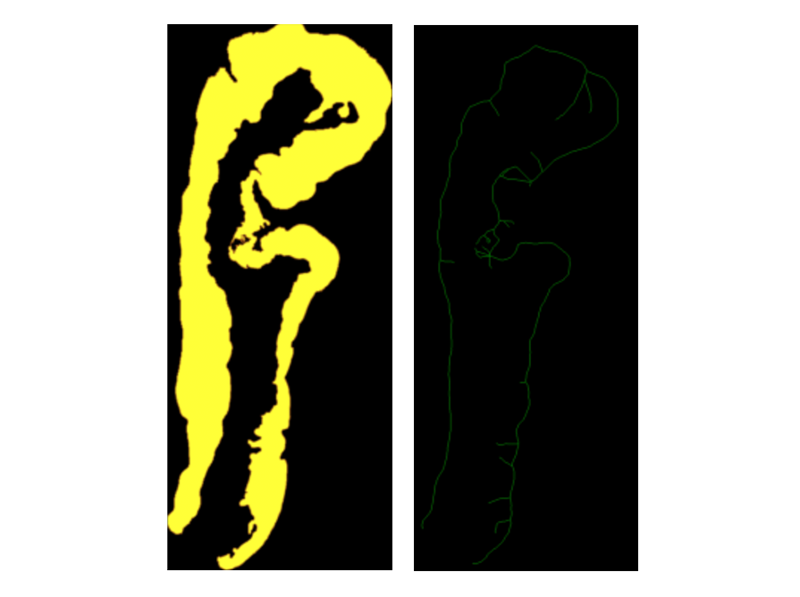

Step 4: Patching
This step is happening in tandem with Step 3 (slice annotation)
Aim: To determine whether a fixed patch size can be used effectively for patching. We propose running a patching algorithm on one stain and analysing the distribution of patches it generates. If a large majority of the patches are a specific size, that size can be considered the optimal. Since the distribution of patches will be the same across stains, the optimal patch size found can be used across all three stains.
Patching Questions
- How many distinct patch sizes should we consider? Should we fit patches on every tissue slice to visualise the distribution?
- Does having more patches make the ML model more complex? Consequently, shold we try to minimize the number of distint patch sizes we use?
- If adaptive pooling can be used effectively to handle images of different sizes (i.e. handle distinct patch sizes) can a ML model distinctly identify patterns in small patches or large patches?
Aryaman’s Patching Algorithm: Methodology
The rotation patching code processes stained tissue images by aligning them spatially and extracting patches for comparative analysis across different stains (H&E, Melan-A, and Sox-10). The algorithm creates a skeleton by converting the image of the epithelium mask into a binary format, reducing the tissue to a central line. The skeleton represents the centreline through the epithelial region, and is used as a guide for placing patches. At each point on the skeleton, the algorithm calculates the slope between neighbouring points, which defines the orientation of the patch. Using this orientation, it forms a square patch which aligns with the boundary. The patch is kept only if it includes regions from the stroma and the background, ensuring that the full width of the epithelium is captured in most cases. Overlapping patches are removed in the final step.

Follow this step-by-step manual to patch the epithelia.
Code required:
- rotate_extract_patch (1).py
Run rotate_extract_patch (1).py.
Results

Alyssa’s Patching Algorithm
Alyssa’s patching algorithm incrementally generates patches over tissue images by leveraging color thresholds to segment and identify key regions such as the epithelium, stroma, and background. The process begins by isolating the epithelium using a black-and-white mask, which ensures that only relevant tissue areas are targeted. This mask allows the algorithm to exclude non-tissue regions, enhancing its focus on areas of interest. The algorithm then adds patches using a fixed size, iteratively stepping through the tissue with small increments. This approach ensures fine-grained coverage and allows for some overlap between patches, helping maintain continuity and adaptability across different epithelium widths. However, patches with excessive overlap (greater than 20%) are discarded to avoid redundancy. While this method excels in providing detailed coverage, particularly for narrow or irregular tissues, it is computationally intensive due to its small step sizes and reliance on precise color thresholding. This dependence on color thresholds makes the algorithm sensitive to variations in staining protocols, image quality, and lighting, which could misclassify tissue regions and affect patch accuracy. Additionally, the fixed patch size may struggle to accommodate larger or more irregular tissues, particularly those with diverse shapes and sizes. Despite these challenges, Alyssa’s algorithm is effective for capturing detailed tissue information in smaller, more uniform samples.
Results

Epithelium Pixel Width Method
By Eli Nacar
- Goes through every row of pixels in the image of the epithelium mask to determine the width of the epithelium in that row
- Defines distinct patch sizes
- Uses the epithelium width to fit appropriate patches to a given region
- Iterates through the defined patch sizes, starting with the smallest size
- Places patches where they do not overlap with others until a certain percentage of the epithelium mask is covered
Note: There seems to be a discrepancy between the README and the code itself As it stands, the readME outlines a method in which the epithelium width is used to calculate the height of any given patch, then calculates the patch width based on the total epithelium area. This ensures the patch is large enough to provide a meaningful sample of the epithelium.
The code that is supposed to execute this seems to do something slightly different. The code defines distinct patch sizes, then uses the epithelium width to fit appropriate patches to a given region. It iterates through the defined patch sizes, starting with the smallest size.
This idea is a good one, and potentially simpler than the other stuff we’ve been looking at. There is the question of orientation of the slice, but in our last class, someone seemed to solve the orientation problem with a simple height and width of the image. This algorithm seems to work best on vertically oriented slices. If we can treat patching and tilting as separate tasks, this could be a good jumping off point before we tilt the patches.
Comparing Approaches
| Feature | Alyssa’s Algorithm | Aryaman’s Algorithm | Eli’s Algorithm |
|---|---|---|---|
| Computationally Inexpensive | X | ||
| Incorporates Tilting | X | ||
| Discards data if patches overlap too much | X | ||
| 4 | |||
| 5 |
Alyssa’s Code
| Pros | Cons |
|---|---|
| Patches grow until they cover a sufficient region of the epithelium, which allows for better adaptability across different epithelium widths. Threshold allows for some overlap between patches, which helps create a balance for ensuring coverage and not missing any key spots without too much duplication. Provides thorough coverage on narrow and irregular tissues and performs well in capturing detailed tissue information when applied to smaller, more uniform samples. |
This method incrementally increases patches using very small step sizes, making code time consuming (likely why this algorithm does not work as effectively with larger, thicker tissues (e.g. the large Copenhagen slices)). The algorithm depends on color thresholds to identify tissue regions, which may lead to inconsistencies or require frequent adjustments due to variations. Differences in color characteristics, staining protocols, lighting, or image quality could create challenges for reliable application. Depends on specific parameter values that were likely chosen by testing on a specific tissue slice. These parameters limit the code’s generalizability to other tissue slices, requiring manual adjustments through trial and error. |
Aryaman’s Code
| Pros | Cons |
|---|---|
| The patch will be generated from the points along the centerline, ensuring that the epithelium is well-positioned within the square patch. Patches are aligned perpendicular to the skeleton, capturing the structural direction of the epithelium. Consistency across patches since the points are always centralized within the epithelial region. Patch dimensions can be customized to increase the chances of covering the entire epithelium in a single patch. |
Calculating skeletons, determining gradients, and filtering patches for overlap can be computationally intensive, especially for large images. Code checking if the patch contains both stroma and epithelium is also time consuming. The patch size is fixed, and the algorithm samples along the skeleton at intervals, potentially missing parts of the epithelium in patches. The fixed patch size may not be optimal for varying epithelial dimensions. If a specific epithelial region is wider than the patch width, the algorithm may fail to capture it entirely in a single patch. Since the algorithm discards patches that do not include stroma, epithelium, and background, there is a risk that such regions might be missed entirely. Skeletonization errors (e.g., gaps or noisy lines) could result in incomplete or misaligned patches. |
Eli’s Code
| Pros | Cons |
|---|---|
| Computationally inexpensive Utilizes a lot of vectorized operations to carry out the task Seems to be the simplest algorithm we have |
Does not touch on tilting the patches at all, and relies a lot on the grid of pixels Not a clearly used or written algorithm Performance relies heavily on slice orientation |
Tilting the patches
Tilting of patches could lead to smaller, more efficient patches. Smaller patches are advantageous because we will get more data to work with. Each patch will also have less data in it, and our model may have an easier time picking up on patterns. Also, tilting the patches, means that the epithelium is always in the same orientation in each patch. Our model will not have to determine the orientation of a sample. Perhaps, this will lead to a simpler, more efficient model.
Edge Tilting Algorithm
We use edge detection and find the slope between two points on the edge. Using that slope, we create one edge of the square. This way, the square is tilted to match up with the angle of the sample.
Upsides: There is already code for that edge detection and finding the edge of the square.
Downsides: The samples are very irregular, so, when the edge is extended, a patch could cut off a lot of epithelium. That cut off epithelium could then be picked up by other patches, but there might be inefficiency in the patching this way. Also, see downsides of Aryaman’s whole algorithm.
Regression Tilting Algorithm:
We pick a random patch. Next, we identify the stroma and the outside of the sample. We treat the pixels of the stroma and the outside of the sample as points. Using these points, we run a regression model to draw the line that most efficiently crosses the epithelium. Now, we will tilt the patch so that two edges are perpendicular and two edges are parallel to that regression line. This will create a patch that follows the contour of the epithelium. Below is a visual representation of this process.

Upsides: this method is not very computationally expensive, especially with the epithelium mask that we already have for many samples.
Downsides: When tilting an existing patch, we cannot ensure that the patch still includes the entire epithelium unless we also resize the patch.
Note: This separates the tilting from the patching process. While this is not necessarily a negative, we don’t know which patching algorithm works best with this method yet. It adds another step to the process.
Patch Design and Optimization QnA
Question 1: Why are square patches used in tissue analysis?
Square images are commonly used in tissue image analysis as they naturally fit into the grid-like structure of digital images, making it easier for algorithms to scan and analyze oatterbs, They streamline calculations for convolutional neural networks (CNNs), which process grids of data efficiently. This uniformity ensures all parts of an image are treated equally, avoiding distortions or biases that could arise from irregular shapes, i.e. rectangular patches. Additionally, square patches align with pre-trained models, saving time and effort by leveraging existing resources. They also simplify techniques like pooling, which reduces data size while preserving important features, focusing on key details without unnecessary complexity. Overall, they offer a balance of computational efficiency and accuracy.
Question 2: Why is patch size in powers of 2? (e.g. 32 x 32, 256 x 256, 512 x 512, etc.) Are there alternatives?
CNN layers benefit from power-of -2 to maintain spatial coherence and compatibility with pooling and downsampling operations. Non-standard dimensions risk spatial distortion or mismatched sizes. GPU’s are optimized for power-of-2 memory alignment, with non-standard dimensions causing potential performance drops, though modern GPUs handle them better. Internal resizing of images wastes memory, processing time, and could introduce rounding errors. Non-standard sizes may also require extra padding to ensure compatibility with layer operations. The 224x224 image size standard introduced in AlexNet, set a precedent for future architectures. Nvidia Tensor Cores optimize hardware efficiency with batch sizes in multiples of 8, while unrelated, it shows how aligning dimensions with hardware multiples improves efficiency.
Question 3: How do researchers determine the optimal number of patches?
The number of patches depends on the variety in the images and the difficulty of identifying differences in the classes. Too many patches can lead to over-segmentation and loss of context. Additionally, it increases the computational cost. Too few patches would make it hard for the model to generalize to unseen data. If we can determine the optimal patch size, that can determine the optimal number of patches by managing the overlap.